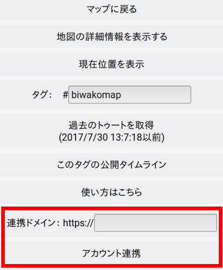

使い方
Tootmapでマストドンのアカウント連携を行うと、Tootmapから位置情報付きトゥートを発信することが出来ます。
サイトアクセス時に現れるウィンドウでマストドンインスタンスのドメインを入力し、「アカウント連携」を押すとTootmapとマストドンのアカウントが連携されます。
連携の解除、再連携は左上のメニューから行えます。
↓
連携中：
未連携：

アカウント連携後に地図をクリック（タップ）するとトゥートの投稿ウィンドウが開きます。トゥートの本文、メディア添付が可能です。
Tootmapからの投稿は、ハッシュタグTLに掲載するために公開範囲が「公開」となりますのでご注意ください。
現在位置の表示
左上のメニューから「現在位置を表示」を選択しますと、地図上に現在位置を示すピンが表示されます
このピンからも投稿が可能です。
利用される上での注意点
位置情報は個人情報と直結する可能性のある情報になります。トゥートされる際はその点を十分ご留意ください。
トゥートを削除することでマップの表示は消えますが、外部の検索エンジンに位置情報と含んだトゥートがキャッシュされて残る場合があります。